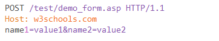
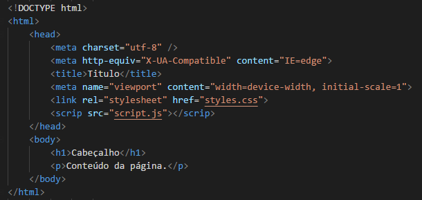
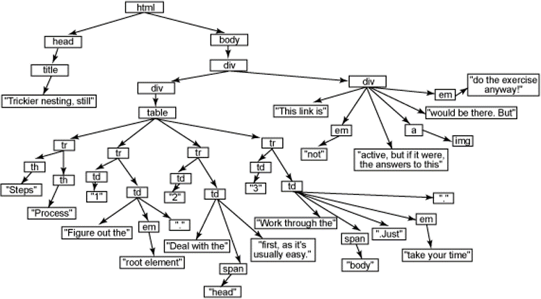
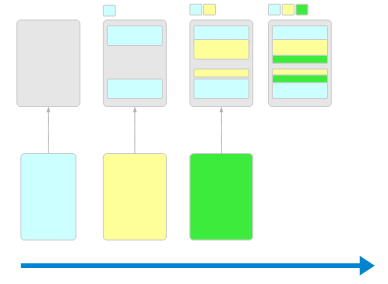

Client-Side
Por Willyam Almeida
Objetivos do Módulo
Compreender ou revisar alguns assuntos estritamente sobre client-side, que servirão de base para construção de telas e componentes.
Agenda
Element Inspector
Fluxo de dados Cliente/Servidor
HTML e processo de renderização
Revisão sobre CSS
Revisão sobre Javascript e introduções sobre alguns conceitos avançados
jQuery
Element Inspector
Tipos de Element Inspector
IE
Firefox
Chrome
Principais Funcionalidades
Fluxo de Dados
Principais formatos de dados
- Query String
- JSON
- XML
Principais verbos do HTTP
GET
Utilizado para requisitar dados
Parâmetros enviados via URL
Podem ser armazenados em histórico
Parâmetros ficam expostos
Tem limitação de tamanho
Cada linguagem de server-side tem uma forma de recuperar os parâmetros
Exemplo
ASP.NET MVC
string id = Request.QueryString["id"];
Node Js
const http = require("http");
const url = require("url");
const server = http.createServer((req, res) => {
if(req.url.indexOf("?") >= 0) {
let query = url.parse(req.url, true).query;
let param = JSON.stringify(query);
res.end("Query String
param: " + param);
}
if(req.url === "/" || req.url === "/home"){
res.end("Home
");
}
});
server.listen(8080, "localhost", () => {
console.log("Listener in http://localhost:8080");
});
POST
Usados para enviar dados
Parâmetros vão no corpo da chamada HTTP
Não tem restrição de tamanho
Suportam diversos tipos de formato de dados
Necessário informar o cabeçalho HTTP content-type para que a linguagem (se tiver um parser) interprete corretamente
POST
Chamada síncrona vs assíncrona
Síncrona
var request = new XMLHttpRequest();
request.open('GET', 'http://localhost:8080/home', false); // `false` makes the request synchronous
request.send(null);
if (request.status === 200) {
console.log(request.responseText);
}
Assíncrona
var xhr = new XMLHttpRequest();
xhr.open("GET", "http://localhost:8080/home", true);
xhr.onload = function (e) {
if (xhr.readyState === 4) {
if (xhr.status === 200) {
console.log(xhr.responseText);
} else {
console.error(xhr.statusText);
}
}
};
xhr.onerror = function (e) {
console.error(xhr.statusText);
};
xhr.send(null);
AJAX
Asynchronous JavaScript And XML
// Old compatibility code, no longer needed.
if (window.XMLHttpRequest) { // Mozilla, Safari, IE7+ ...
httpRequest = new XMLHttpRequest();
} else if (window.ActiveXObject) { // IE 6 and older
httpRequest = new ActiveXObject("Microsoft.XMLHTTP");
}
httpRequest.open('GET', 'http://localhost:8080/home', true);
httpRequest.send();
Fluxos de dados
DemoHTML
Hypertext Markup Language
Principais Partes
DOCTYPE
Header
Body
O DOM
Document Object Model
 Mais do que um emaranhado de tags, enxergue o documento html como uma árvore de HTML ElementsProcesso de renderização

Processo de renderização
O DOM
Estilos
Árvore de Renderização
Paint
Repaint
Reflow
O DOM + CSSOM

Tópicos para estudos
Estrutura HTML
Tags
Semântica
CSS
Cascade Style Sheets
Aplicação, na prática
CSS
Atenção ao conceito!
vinculação e carregamento na página HTML
- Arquivo CSS
- Tags style
- Inline style
@include
Contexto da Aplicação
Localização de Elementos
Tag
Id
Classes
Atributo
Conceito de que tudo é um atributo
Pseudo seletores e operadores
:hover, :first-child, :last-child, :not(), ...
*,>
Pseudo seletores e operadores
DemoArmadilhas do CSS
Envenenamento de escopos e pontos de atenção
DemoComportamentos fundamentais
Conceito de que todo elemento é customizado e seus comportamentos padrões são customizáveis
Exibição: inline, inline-block, block, table
Float: left e right
Posicionamento: absolute, relative, fixed, normal
Tópicos para estudos
Box model
Seletores
Apresentação
Posicionamento
Animação
Media queries
Tópicos para estudos